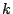
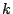

59. Correlating Protein-DNA
and Protein-Protein Interactions of Transcription
Factors
Ricardo Bringas 1, Thomas Manke 2, Martin Vingron 3
Keywords: protein-protein interaction,
protein-DNA interaction, transcription, regulation.
Recent advances in proteomics have resulted in
comprehensive maps for protein-protein interactions [1,2,3,4] as well as genome-wide location of
protein-DNA binding sites [5,6]. The sizeable fraction of
false positive and false negative results in these large-scale
experiments calls for data integration. Here we investigate whether
protein-protein interaction data may be used to enhance our
understanding of protein-DNA binding and regulation. We demonstrate
a statistically significant correlation between co-operatively
acting transcription factors and their interaction profiles, when
compared to random samples. We argue that combining the data from
protein interaction networks with genome-wide localisation of
transcription factor binding sites can help achieving a more
accurate definition of regulatory networks.
We consider the network of protein-protein
interactions and define an interaction distance,
, as the minimal number of
interactions necessary to link two proteins  and . The protein-DNA
binding data, on the other hand, defines a bipartite graph,
which can be represented as a binary matrix,
and . The protein-DNA
binding data, on the other hand, defines a bipartite graph,
which can be represented as a binary matrix,  . A raw,
. A raw,  , in this matrix
corresponds to the binding pattern of transcription factor,
, over the whole genome. With this
information we can define a similarity score,
, in this matrix
corresponds to the binding pattern of transcription factor,
, over the whole genome. With this
information we can define a similarity score,
 , for all pairs of known
DNA-binding proteins. We then ask the question to what extent
is correlated with . We also searched for significant -tuples () of transcription
factors and studied their binding pattern and function of
their regulated genes.
In this work we consider different data sets for
protein-protein interactions [1,2,3,4] and different methods for obtaining
protein-DNA binding information [5,6] in Saccharomyces cerevisiae.
In each case we observe a clear enhancement of directly interacting
proteins for high scoring pairs, i.e. pairs with similar binding
pattern (see Fig. 1). This
corresponds to the biological picture of transcription factors
acting as modules. The data we analysed also supports the view that
that transcription factors occurring in the same protein-complex
bind preferentially to the same promoter regions. Using the binding
patterns of significant -tuples of transcription
factors, we also find new binding sites and a preference to
putatively regulate genes with the same functional category. This
is plausible and allows identification of new regulated genes and
functional assignement for unclassified genes.
, for all pairs of known
DNA-binding proteins. We then ask the question to what extent
is correlated with . We also searched for significant -tuples () of transcription
factors and studied their binding pattern and function of
their regulated genes.
In this work we consider different data sets for
protein-protein interactions [1,2,3,4] and different methods for obtaining
protein-DNA binding information [5,6] in Saccharomyces cerevisiae.
In each case we observe a clear enhancement of directly interacting
proteins for high scoring pairs, i.e. pairs with similar binding
pattern (see Fig. 1). This
corresponds to the biological picture of transcription factors
acting as modules. The data we analysed also supports the view that
that transcription factors occurring in the same protein-complex
bind preferentially to the same promoter regions. Using the binding
patterns of significant -tuples of transcription
factors, we also find new binding sites and a preference to
putatively regulate genes with the same functional category. This
is plausible and allows identification of new regulated genes and
functional assignement for unclassified genes.
Figure: Histogramm for the 100 highest scoring (co-occuring) pairs. In
this example, we use a combined set of 28.551 protein-protein
interactions and the DNA-binding information from [5]. As a score for synergy we employ
the Shannon mutual information. An increase of pairs with
 is apparent, as is a significant
reduction in the number of disconnected proteins.
is apparent, as is a significant
reduction in the number of disconnected proteins.
|
|
- 1
- P. Uetz et al. A comprehensive analysis of
protein-protein interactions in Saccharomyces cerevisiae. Nature
403, 623 (2000).
- 2
- T. Ito et al. Comprehensive two hybrid analysis to
explore the yeast protein interactome. PNAS 97, 1143
(2000).
- 3
- A. Gavin et al. Functional organization of the yeast
proteome by systematic analysis of protein complexes. Nature
415, 141 (2002).
- 4
- Y. Ho et al. Systematic identification of protein
complexes in Saccharomyces cerevisiae. Nature 415, 180
(2002).
- 5
- T.I. Lee et al. Transcriptional Regulatory Networks in
Saccharomyces cerevisiae. Science 298, 799-804 (2002).
- 6
- E. Wingender et al. TRANSFAC: an integrated system for
gene expression regulation. Nucleic Acids Res. 28, 316
(2000).
Footnotes
- ... Bringas1
- Centro de Ingenieria Genètica y Biotecnolgia, Ave 31 y
calle 158, Cubanacan, La Habana, Cuba. E-mail:
ricardo.bringas@cigb.edu.cu
- ... Manke2
- Max Planck Institute for Molecular Genetics, Ihnestr. 73,
Berlin, Germany. E-mail:
manke@molgen.mpg.de
- ... Vingron3
- Max Planck Institute for Molecular Genetics, Ihnestr. 73,
Berlin, Germany. E-mail:
vingron@molgen.mpg.de
2003-04-07